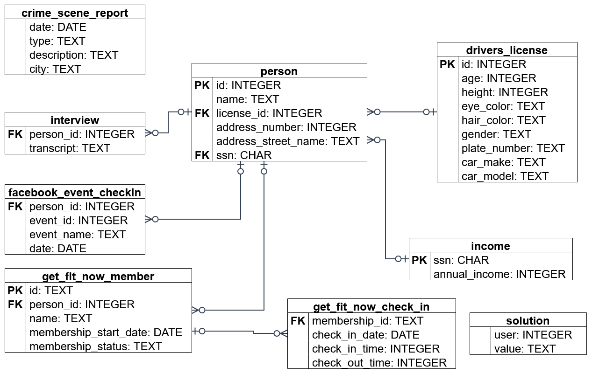

SQL Murder Mystery
A crime has taken place and the detective needs your help. The detective gave you the
crime scene report, but you somehow lost it. You vaguely remember that the crime
was a murder that occurred sometime on Jan.15, 2018 and that it took place
in SQL City. All the clues to this mystery are buried in a huge database, and you need to use
SQL to navigate through this vast network of information. Your first step to solving the
mystery is to retrieve the corresponding crime scene report from the police
department's database.

Ctrl + Enter to run
Only one SELECT statement can be executed at a time.
Results
Loading the database…
Your query results will appear here.